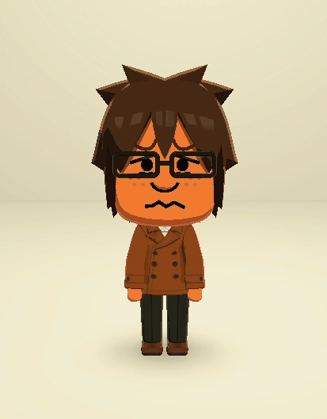
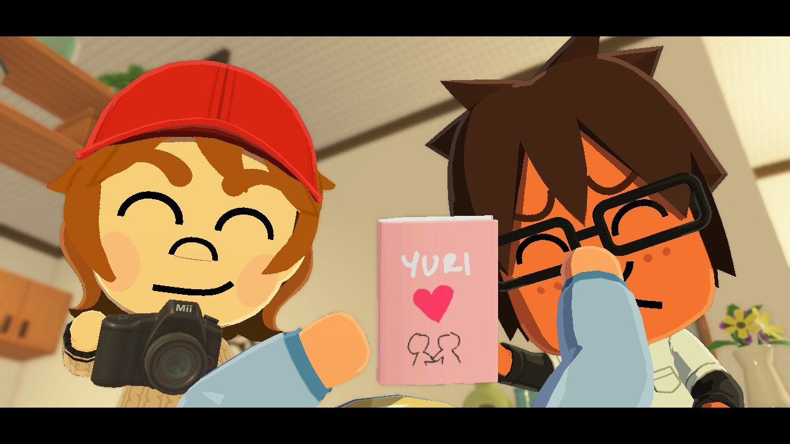

Thinker
Thoughtful and introspective. Great at thinking things through and analyzing issues from every angle.
Birthday
September 9
Pronouns
he/him
Gender
Male (Cisgender)
Dating Preferences
Male/Female/Nonbinary (Bisexual)
Outfit Preferences
Masculine
Trivia





This site contains music and animations.
Do you want to enable them?